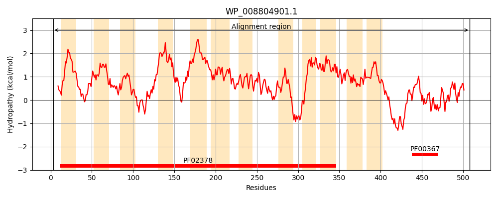
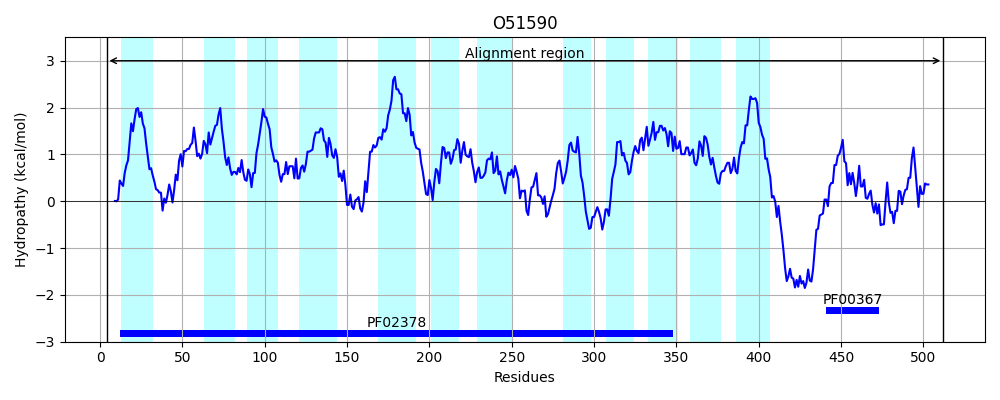
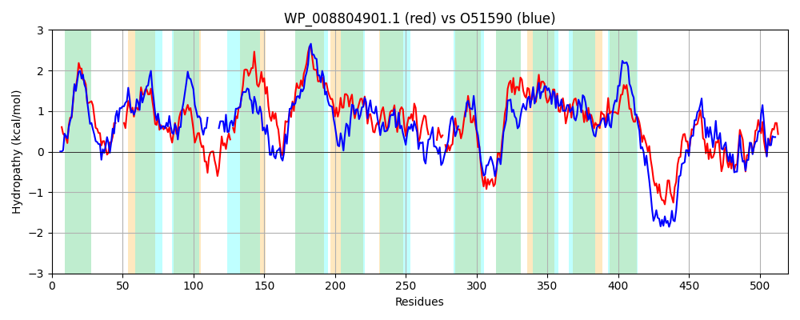

Hit Accession: O51590
Hit TCID: 4.A.1.1.18
Hit Description: gnl|BL_ORD_ID|7296 gnl|TC-DB|O51590|4.A.1.1.18 Pts system, iibc components OS=Borrelia burgdorferi (strain ATCC 35210 / B31 / CIP 102532 / DSM 4680) GN=BB_0645 PE=4 SV=1
Mach Len: 520
e:0.000000
Query TMS Count : 12
Hit TMS Count: 12
TMS-Overlap Score: 10.000000
Predicted Substrates:CHEBI:5418;glucose
BLAST Alignment:
Score: 711 , Bit scores: 278 bits, E-value: 1.1e-87, Alignment length: 520, Percentage identity: 33
Query: 3 GVKKLQDFSKAMIGPVLYLPAIGLLIALFSMTTNRLWVDESSALYL-----LGKFVSSMLWALMNHLGFLFCLGLASGLAKTRKAEAAFVAAMTWLVYLAANNSWLTLTHRLASGATNAQLYGSGQT-FIFGFQVIDMGVFLGIILGCAVAFVHNRVVGIEFRGALSIYGNSKLVLIVMLPLVGLFAIATVYLWPVVELGISALTGFMKSFGAIGVFLYGFLNRFLIPTGLHHLIWSPFVFTSIGGQLLIDGQTVIGAKPIFLAEIA-----RHPIG-ALSDSARFLTYGMVKIFGTAGMALAFYRTAKPENKQRLKVTLIPLIVTSVLVGITEPFEFLFIFTAPLLWLIYSLLDGFFQMLAWLLHVRVCAT--NGLIDFVVYNLPAGASVTRWPVFVALGLLETATMYLVGTFCITRLRMLTPGREAAADAEPSEQTGQASEIADKGTLVIAGLGGKENVCVVENCFTRLRVDVRDPALIQQSLLKESGGSSVLIKGNHVQVIYGLGVNKIRTAVNASL 508
G ++ Q F ++ + P+ LPA GLL+ + +N V S L + + K +S+ + ++L +F +G+A GLAK+ K + A + +LV A + ++ R A+ + SG F+ G + ++ GVF G+++G ++H+R ++ L + S+ V I++ A+ +WP V+ GI+ + G + S G IG +YG R L P GLHH+ + PF T +GG ++IDG+ + G + IF AE+A R IG + S RF+T +FG G ALA Y TAK E + ++ L+ +TS L GITEP EF F+F AP+L+++++ DGF MLA +L + + T G +DF+++ + G S T W + +G++ Y F I + TPGR ++E S + + + T VI GLGG N+ ++ C TRLR+ VRD + + +LK++G V+IKGN VQV+YG GV+ ++ + L
Sbjct: 4 GFEQAQKFGRSFMLPIAILPAAGLLLGIGGSLSNPETVRTYSFLNIFFLQSVFKIMSASGSIIFSNLAPIFSIGIAVGLAKSDKGTSGIAAFIGYLVMNATIGVLIDVSGR-------AESFSSGAVGFVLGIKTLETGVFGGVVVGILTYYLHSRFNKVDLPKVLGFFSGSRFVPIIVSFSSIFLAVIMFLVWPFVQSGINKVGGLVDSTGYIGTLIYGIFLRMLGPFGLHHIFYLPFWTTGLGGSVIIDGKLIEGTQNIFFAELAAQGTDRFFIGTSRFMSGRFIT----MMFGLPGAALALYYTAKREERTKVFGLLMSSALTSFLTGITEPLEFSFLFVAPILYVVHATFDGFAFMLAHILQITIGQTFSGGFVDFILFGILQGNSRTNWLLVPVIGIVWFFLYYFTFIFLINKFDFKTPGRTQDLNSEDSPSSKSSEFEENYATKVIIGLGGASNIVELDCCATRLRITVRDVLKVSEKILKKTGSKGVIIKGNGVQVVYGPGVSVLKNEIEELL 512 | Protein Hydropathy Plots: |
|---|
|  |  |
Pairwise Alignment-Hydropathy Plot:
|
|---|
|  |